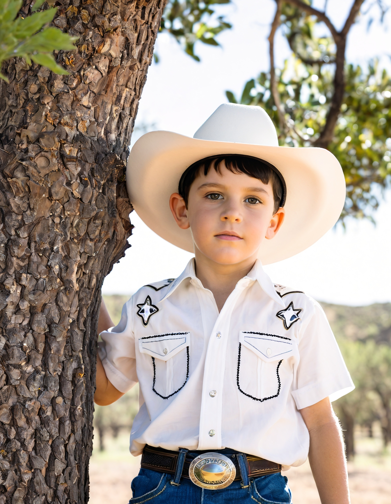

•
Agenda•
Galeria•
ContatoLeandro "Lorota" Guilhen Vieira nasceu em uma pequena cidade do interior de Goiás, chamada Santo Amaro. Desde pequeno, Leandro demonstrou uma paixão incomum pela música. Aos cinco anos, ele já encantava a todos com sua voz doce e afinada, cantando em festinhas de família e eventos escolares.
Seus pais, João e Maria, eram humildes agricultores, mas sempre incentivaram o talento do filho. Aos sete anos, Leandro ganhou seu primeiro violão, um presente de seu avô, que também era um músico amador. A partir desse momento, ele passou a dedicar horas e horas do seu dia aprendendo a tocar e compondo suas próprias músicas.
Na adolescência, Leandro começou a se apresentar em festas juninas e pequenos eventos na região. Ganhou o apelido de "lorota" por sempre contar histórias falsas mas engraçadas aos seus amigos. Seu carisma e talento logo o destacaram, e ele passou a ser conhecido como "o menino prodígio do sertanejo". Aos 18 anos, formou uma dupla com seu melhor amigo, Pedro, e juntos começaram a fazer shows em cidades vizinhas.
Aos 25 anos, Leandro e Pedro decidiram tentar a sorte na capital, Goiânia. Após muitos desafios e noites mal dormidas, a persistência da dupla foi recompensada quando foram descobertos por um produtor musical. Em pouco tempo, lançaram seu primeiro álbum, que foi um sucesso imediato. A música "Amor de Interior" se tornou um hit nacional, e a dupla começou a fazer turnês por todo o Brasil.
Leandro com 7 anos
No entanto, aos 30 anos, Leandro sofreu um duro golpe. Pedro, seu parceiro de longa data, decidiu deixar a carreira musical para se dedicar à família. Leandro ficou devastado, mas não desistiu. Decidiu seguir carreira solo, adotando o nome artístico de "Leandro Lorota".

A transição foi difícil, mas Leandro continuou a compor e lançar músicas que tocavam o coração das pessoas. Seu estilo autêntico e sua voz marcante conquistaram uma legião de fãs. Aos 40 anos, ele já era um dos maiores nomes do sertanejo no Brasil, com diversos álbuns de sucesso e prêmios no currículo.
Além da música, Leandro também se dedicou a causas sociais. Fundou a "Instituição Coração Sertanejo", que oferecia aulas de música para crianças carentes em sua cidade natal. Seu objetivo era dar a essas crianças a mesma oportunidade que ele teve, acreditando que a música poderia mudar vidas.
Aos 50 anos, Leandro decidiu diminuir o ritmo das turnês e se dedicar mais à família. Casou-se com Ana, uma médica que conheceu durante um show beneficente, e teve dois filhos, Lucas e Mariana. A família se tornou seu porto seguro e inspiração para novas composições.
Leandro Lorota cantando no Rock in Rio 2012
Mesmo aos 60 anos, Leandro Lorota continuava a encantar com sua música. Lançou um álbum comemorativo de 40 anos de carreira, repleto de novas canções e regravações de seus maiores sucessos. A turnê de lançamento foi um sucesso, provando que o talento e a paixão de Leandro pela música eram atemporais.
Leandro Lorota tornou-se uma lenda do sertanejo, um ícone cuja história de perseverança, talento e amor à música inspirava gerações. E, em cada apresentação, ele agradecia a seu avô pelo velho violão que mudou sua vida, aos pais pelo apoio incondicional, e aos fãs pelo carinho e reconhecimento.